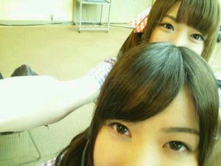

2012/0317Sat今日はっ(o・・o)
こんばんごっ(o・・o)
さゆりんごっ(o・・o)
みなさんお元気ですか〜o(*⌒―⌒*)o
さゆりんはお元気ですよー＼(^_^)(^_^)／
けどね〜
花粉症がやばくて〜
今日も目あかなかったよ〜(´；ω；`)
ぱんぱんよ〜(´；ω；`)
鼻かゆいんよ〜(´；ω；`)
花粉症って
病院いったほうが
ええんかな〜(>_<)
耳鼻科やんね〜ヽ(・∀・)ノ
耳鼻科ってあんまり
いったことないんですよね〜...(・ω・)
姉の付き添いでいって
置いてある漫画を
読み漁った思い出しかないわ〜
えっ？なに？
松村のしょうもない思い出なんか
どうでもええわ〜って？
どうでもよくないんですよ(￣へ￣井)！
今日は何の日？
そう！
乃木坂４６のチャリティイベントの日ですよ！
東北をはじめ
日本中のかたに
元気をお届けするための
とーーっても大切な日に
目がしょぼしょぼしてたら
いややん〜！
誰か松村を耳鼻科につれてって〜(´；ω；`)
いや！
松村は頑張りますよー＼(^_^)(^_^)／
今日来られるかた！
松村のお目めが
しょぼしょぼしてへんか
確認してみてくださいっ☆ww
今日来られないかた！
一日楽しんで
一緒に元気をお届けしましょ〜o(*⌒―⌒*)o
ほなら、さゆりん
頑張ってきます！
またね♪

2012/03/17 14:48
コメント(388)
さゆりん花粉症だいじょうぶー？
僕も花粉症ヤバくて目がかゆすぎる……
早く病院連れてってー
あっ さゆりんと一緒に病院行けばいいのか(笑)
僕も花粉症ヤバくて目がかゆすぎる……
早く病院連れてってー
あっ さゆりんと一緒に病院行けばいいのか(笑)
俺は花粉症じゃないからわからないわー(-｡-;
りんごが花粉症とか、代わってあげたい(>_<)
一応病院で薬もらった方がいいんじゃないかな(^-^)/
今日のイベント楽しみにしてるね(*^^*)
りんごが花粉症とか、代わってあげたい(>_<)
一応病院で薬もらった方がいいんじゃないかな(^-^)/
今日のイベント楽しみにしてるね(*^^*)
さゆりん可愛いね&iF992;
さゆりん、お疲れりんご～！
さゆりん、耳鼻科行った事無いん？
じゃ、耳鼻科のベテランの俺が連れてったるわ～！(笑)
ってか、俺も目がモーレツに痒いよ～！
(。´Д⊂)
目薬の準備しなきゃ！
今日は行けんけど、応援しとるからな！
頑張りや～！
ふぁいっとぉ！
q(^-^q)
さゆりん、耳鼻科行った事無いん？
じゃ、耳鼻科のベテランの俺が連れてったるわ～！(笑)
ってか、俺も目がモーレツに痒いよ～！
(。´Д⊂)
目薬の準備しなきゃ！
今日は行けんけど、応援しとるからな！
頑張りや～！
ふぁいっとぉ！
q(^-^q)
おいらも花粉症が酷くて、目ショボショボ、鼻グズグズ最悪(T_T)
今日は雨だからマシだけど、そのかわり朝からずっと偏頭痛で、頭がぐわんぐわんしてるよ(T_T)
今日は雨だからマシだけど、そのかわり朝からずっと偏頭痛で、頭がぐわんぐわんしてるよ(T_T)
頑張って下さい！
なにこのウォータースライダーで一緒の浮き輪で滑る前みたいな写真(笑)
可愛いやん(*≧∀≦*)
花粉症なんか、さゆりんごパンチで倒しちゃえー!!
今頃一部かな！
日本を元気づけるパフォーマンスができるように、頑張りましょうヽ(・∀・)ノ
可愛いやん(*≧∀≦*)
花粉症なんか、さゆりんごパンチで倒しちゃえー!!
今頃一部かな！
日本を元気づけるパフォーマンスができるように、頑張りましょうヽ(・∀・)ノ
さゆりん初コメ♪
おはよー♪
今日は二部のチャリティLIVE行くよ( ´ ▽ ` )ﾉ
花粉症に負けずに
がんばろーねぇ！
こんにちご♪
さゆりんご♪
チャリティーイベント
始まる前に僕が耳鼻科連れていくよ(^^)笑
とか言ってみるけど
今日は行かれへんねんなぁ(..)
僕は今日行かれへんけど大阪から応援してるよ☆
また更新待ってるよ～☆
さゆりんご♪
チャリティーイベント
始まる前に僕が耳鼻科連れていくよ(^^)笑
とか言ってみるけど
今日は行かれへんねんなぁ(..)
僕は今日行かれへんけど大阪から応援してるよ☆
また更新待ってるよ～☆
さゆりんこんにちは！
花粉症は辛いよなあ～かかったことないけど(汗)
聞く話によると鼻水もくしゃみも目も全部やばくなるらしいじゃん！
耳鼻科いったほうがいいよ！花粉症は耳鼻科って知らなかったけど（笑）
・・・だって北海道花粉ないんだもん！
てことで(？)、将来北海道にすむと花粉にもかからずゴキブリも出ず山もあり超快適ですのでご検討くださいv(^-^)v
今日いけないけど楽しんでね！
パワーをゼップへ送ります！
花粉症は辛いよなあ～かかったことないけど(汗)
聞く話によると鼻水もくしゃみも目も全部やばくなるらしいじゃん！
耳鼻科いったほうがいいよ！花粉症は耳鼻科って知らなかったけど（笑）
・・・だって北海道花粉ないんだもん！
てことで(？)、将来北海道にすむと花粉にもかからずゴキブリも出ず山もあり超快適ですのでご検討くださいv(^-^)v
今日いけないけど楽しんでね！
パワーをゼップへ送ります！
さゆりんご花粉症か(^_^;)
俺もや(^｡^;)
良い耳鼻科教えよか？
とりあえず目薬必須(^_^)v
俺もや(^｡^;)
良い耳鼻科教えよか？
とりあえず目薬必須(^_^)v
おこんにちは(。^-^。)
私も花粉症で、鼻痒い涙目、やわ。
結局マスクと手洗いと衣服のパタパタが、ええみたい。
花粉を、寄せない寄らない、かな。
.
大阪姉妹写真、かわいいね。
今度は末娘も入れたりや。
.
私はイベントに行かれへんけど、さゆりんが滑ってスッ転ばんように、祈ってるわ。
.
(。・人・。) ゴニョゴニョ-
私も花粉症で、鼻痒い涙目、やわ。
結局マスクと手洗いと衣服のパタパタが、ええみたい。
花粉を、寄せない寄らない、かな。
.
大阪姉妹写真、かわいいね。
今度は末娘も入れたりや。
.
私はイベントに行かれへんけど、さゆりんが滑ってスッ転ばんように、祈ってるわ。
.
(。・人・。) ゴニョゴニョ-
いま会場着いたー!!(^o^)／
まぁ、今日は2部の方に参戦だから早めに行動ってことで。笑
.
今日は1部2部共に頑張ってな！
期待してるで!!(≧∇≦)笑
まぁ、今日は2部の方に参戦だから早めに行動ってことで。笑
.
今日は1部2部共に頑張ってな！
期待してるで!!(≧∇≦)笑
さゆりん！こんにちはー＼(^-^)／
僕も花粉症でくしゃみが止まらない(T_T)
どーしよー(;o;)
さゆりんごパワー頂戴(*^O^*)
残念ながら今日のイベントには行けないんだ…
さゆりんに会いたいよー(>.<)
次はいつ会えるかな？
さゆりんの思い出話面白い♪これからも思い出話教えてくださいませm(__)m
じゃあ今日のイベントが無事終了する事を祈ってます！あとさゆりんの花粉症が良くなることも！
じゃあまたコメントしますねヾ(^▽^)ノ
僕も花粉症でくしゃみが止まらない(T_T)
どーしよー(;o;)
さゆりんごパワー頂戴(*^O^*)
残念ながら今日のイベントには行けないんだ…
さゆりんに会いたいよー(>.<)
次はいつ会えるかな？
さゆりんの思い出話面白い♪これからも思い出話教えてくださいませm(__)m
じゃあ今日のイベントが無事終了する事を祈ってます！あとさゆりんの花粉症が良くなることも！
じゃあまたコメントしますねヾ(^▽^)ノ
さゆりんご最近めっちゃ好き(;o;)！！
これからも応援するね！
こんにちは。
自分は、雨のせいか花粉症いくらか症状が治まってます。
二部に行きます。
よろしく。
自分は、雨のせいか花粉症いくらか症状が治まってます。
二部に行きます。
よろしく。
病院行った方がいいよ
仕方ないから一緒に行ってあげる(≧∇≦)
仕方ないから一緒に行ってあげる(≧∇≦)
花粉症大変ですよね(>_<)
こっちの住んでいるところは花粉メッチャとんでます
でも花粉症に負けずに頑張ってください(*≧∀≦*)
今日のライブもりんごパワーで頑張ってください(^^)v
こっちの住んでいるところは花粉メッチャとんでます
でも花粉症に負けずに頑張ってください(*≧∀≦*)
今日のライブもりんごパワーで頑張ってください(^^)v
ども～！
タクチコでーす！
俺も花粉症で目と鼻がやられてまつむらでーす。
この時期、ガスマスクとかデフォだよね！
って、そんなわけないよね。
でも花粉症に負けずにチャリイベ行くんでさゆりんもがんばってくだせー！
日本を元気しちゃってくだせー！
チャリイベ楽しみにしてまんがなー！
タクチコでーす！
俺も花粉症で目と鼻がやられてまつむらでーす。
この時期、ガスマスクとかデフォだよね！
って、そんなわけないよね。
でも花粉症に負けずにチャリイベ行くんでさゆりんもがんばってくだせー！
日本を元気しちゃってくだせー！
チャリイベ楽しみにしてまんがなー！
さゆりんこんにちはヽ(´▽`)/
花粉症なんですか！
苦しさはよくわかります(-ロ-;)
今日のイベント行けませんが、さゆりん頑張ってください(*´∇｀)
花粉症なんですか！
苦しさはよくわかります(-ロ-;)
今日のイベント行けませんが、さゆりん頑張ってください(*´∇｀)
さゆりんさゆりんさゆりんご！
あしゅりんごが現れた！
さゆりん知ってる？
今ゆりかもめに乗っているタケシです
勿論行き先は
【Zepp東京！】
さゆりーん
後から行く
頑張るんだぞー！
あしゅりんごが現れた！
さゆりん知ってる？
今ゆりかもめに乗っているタケシです
勿論行き先は
【Zepp東京！】
さゆりーん
後から行く
頑張るんだぞー！
久しぶりのコメントです(^-^)/
花粉症辛いよね(T_T)俺も病院行きましたよ。
少しは、楽になったよ
イベントは、行けないけど、頑張って(^-^)/
花粉症辛いよね(T_T)俺も病院行きましたよ。
少しは、楽になったよ
イベントは、行けないけど、頑張って(^-^)/
てっちりです！
なんかの注射で花粉症治るらしいよ！
耳鼻科じゃなくて内科とかでやってもらえるはず(^〇^)
チャリティーイベント楽しんでね♪
花粉症大変だよね&iF9AF;
病院連れていってあげたいけど・・・
さゆりんに会いたーい!!
お大事に(^O^)／
病院連れていってあげたいけど・・・
さゆりんに会いたーい!!
お大事に(^O^)／
さゆりんごコメントずっとまってたよ＼(^o^)／
花粉症やばいよねー
俺も目と鼻がやばい(~o~)
今くしゃみしながらコメントしてます♪笑
イベントとかいけないけど、頑張ってください(*^^*)
応援してますから♪♪
頑張れさゆりんご(￣^￣)
花粉症やばいよねー
俺も目と鼻がやばい(~o~)
今くしゃみしながらコメントしてます♪笑
イベントとかいけないけど、頑張ってください(*^^*)
応援してますから♪♪
頑張れさゆりんご(￣^￣)
たぶん初コメ(≧▽≦)\
花粉症俺の家族みんな(；-_-)=3
毎日目がショボショボしてるよ
今日のチャリイベいけないですが！部活しながら応援しとります(*^-^)ノ
頑張ってくださいヽ(≧▽≦)/
じゃあねヽ(・∀・)ノ
花粉症俺の家族みんな(；-_-)=3
毎日目がショボショボしてるよ
今日のチャリイベいけないですが！部活しながら応援しとります(*^-^)ノ
頑張ってくださいヽ(≧▽≦)/
じゃあねヽ(・∀・)ノ
地元に帰っててイベント行けないけど、頑張ってね！
俺も花粉症で目のかゆみと鼻水ヤバイ(>_<)
しかも喉も風邪引いたから、、、、(T_T)
病院に行きます！
俺も花粉症で目のかゆみと鼻水ヤバイ(>_<)
しかも喉も風邪引いたから、、、、(T_T)
病院に行きます！
ヤッホーおおきにー☆
更新待っとったんやでー！
航平やで♪
(フルネームは荒光航平)
俺も嚔(くしゃみ)が止まらんくて
ヤバいわー！
ティッシュ１日で１箱
使ってまうわー(°□°;)
なぁなぁ、俺と一緒に
耳鼻科行かへん？
一緒に診てもらおうや(o^∀^o)
それにしても今日は
乃木坂４６の
チャリティーイベント
やるって時に限って
生憎(あいにく)の雨かいな……
嫌やなぁ……
てか今日行きたかったんやけど
当選されへんかったから
さゆりんごに会えへん……
寂しいわー・・・(゜ーÅ)
まぁ俺は応援してんで！
一緒に被災地を
助けようやないか！
俺はただ祈るだけやがな…
どうか１日でも早く
被災地が復興しますように・・・
そして１日でも早く
俺とさゆりんごが出会える日が
訪れますように・・・
ってな(笑)
そういや明日の乃木どこ、
2ndシングル曲
選抜メンバーの発表やん！！
さゆりんごなら
絶対選抜入っとる！
乃木坂七福神からも
外されとらん！
信じとるで☆
んじゃ、頑張れやー(-^〇^-)
更新待っとったんやでー！
航平やで♪
(フルネームは荒光航平)
俺も嚔(くしゃみ)が止まらんくて
ヤバいわー！
ティッシュ１日で１箱
使ってまうわー(°□°;)
なぁなぁ、俺と一緒に
耳鼻科行かへん？
一緒に診てもらおうや(o^∀^o)
それにしても今日は
乃木坂４６の
チャリティーイベント
やるって時に限って
生憎(あいにく)の雨かいな……
嫌やなぁ……
てか今日行きたかったんやけど
当選されへんかったから
さゆりんごに会えへん……
寂しいわー・・・(゜ーÅ)
まぁ俺は応援してんで！
一緒に被災地を
助けようやないか！
俺はただ祈るだけやがな…
どうか１日でも早く
被災地が復興しますように・・・
そして１日でも早く
俺とさゆりんごが出会える日が
訪れますように・・・
ってな(笑)
そういや明日の乃木どこ、
2ndシングル曲
選抜メンバーの発表やん！！
さゆりんごなら
絶対選抜入っとる！
乃木坂七福神からも
外されとらん！
信じとるで☆
んじゃ、頑張れやー(-^〇^-)
さゆりん(o・・o)
更新まってたよ(*≧艸≦*)
花粉は俺もひどい(泣)
今日のチャリティーライブ楽しみにしてるww
２部参戦(はぁと
チャリティーイベント行きたかった
さゆりんさゆりんさゆりんりん
さゆりんさゆりんさゆりんごのブログ
きたーっ＼(^o^)／！！！
私もZepp東京へ飛んで行きたいです！
で、さゆりんや乃木坂のみんなを応援したいです！
行けないのでブログのコメントからさゆりんへ☆
ファイトッ！！楽しんでください！
さゆりんさゆりんさゆりんごのブログ
きたーっ＼(^o^)／！！！
私もZepp東京へ飛んで行きたいです！
で、さゆりんや乃木坂のみんなを応援したいです！
行けないのでブログのコメントからさゆりんへ☆
ファイトッ！！楽しんでください！
そっきゃー花粉症でやんすか～～あれって大変みたいでやんすよね。かくいうあっちきは
何故か掛からない人なんでー。メディアとかで症状を知る次第ですがさゆりんごがですか～
こりゃー心配ぞなもし～( ^^)Y☆Y(^^ )！(＾＾)！可愛いのには変わりはないでしょうけど
でも大阪時代のくだりは実にイメージ通りでやんすね～(＾＾)＼(゜゜)o(^-^)oカナちゃんも
症状をお持ちみたいですからね。にしてもその後がなんかいかにもさゆりんごらしい感じで
おますな～！(＾＾)！！(＾＾)！可愛いなりよ。そーきゃあイベでやんすか～6曲って
いったら最多だそうで、頑張ってつかーさい(^_-)-☆！(＾＾)！画の奥なさゆりんごも
よかですね～！(＾＾)！(＃^.^＃)11月のblogにありましたが、視力2.0ですか～
凄いですね。ちなみに僕はそれなりにいいつもりなんですが松村ちゃんには負けましたわに～
なんか弱冠下がったらしく（笑）
何故か掛からない人なんでー。メディアとかで症状を知る次第ですがさゆりんごがですか～
こりゃー心配ぞなもし～( ^^)Y☆Y(^^ )！(＾＾)！可愛いのには変わりはないでしょうけど
でも大阪時代のくだりは実にイメージ通りでやんすね～(＾＾)＼(゜゜)o(^-^)oカナちゃんも
症状をお持ちみたいですからね。にしてもその後がなんかいかにもさゆりんごらしい感じで
おますな～！(＾＾)！！(＾＾)！可愛いなりよ。そーきゃあイベでやんすか～6曲って
いったら最多だそうで、頑張ってつかーさい(^_-)-☆！(＾＾)！画の奥なさゆりんごも
よかですね～！(＾＾)！(＃^.^＃)11月のblogにありましたが、視力2.0ですか～
凄いですね。ちなみに僕はそれなりにいいつもりなんですが松村ちゃんには負けましたわに～
なんか弱冠下がったらしく（笑）
俺も花粉症(>__<)
内科でも大丈夫だよ！花粉症の薬もらえる(^^)/
だいぶ楽になるよ・◇・
すっごい眠くなるけど
今日行きたかったよ(;o;)
内科でも大丈夫だよ！花粉症の薬もらえる(^^)/
だいぶ楽になるよ・◇・
すっごい眠くなるけど
今日行きたかったよ(;o;)
さゆりんカワユス！
どんな話題でもいいから、いっぱい話をしてください！
俺達ファンにとっては、どーでもいい話なんてないんですから！
ヽ(*´▽)ノ♪
花粉症大変だけど、無理せず頑張ってね！
(≧∀≦)
どんな話題でもいいから、いっぱい話をしてください！
俺達ファンにとっては、どーでもいい話なんてないんですから！
ヽ(*´▽)ノ♪
花粉症大変だけど、無理せず頑張ってね！
(≧∀≦)
耳鼻科行った方がいいと思うよ♪
チャリティー頑張って!!
チャリティー頑張って!!
イベ頑張れ
花粉症の症状を抑える薬があるみたいよ
さゆりんの思い出もっと語って欲しい
花粉症大丈夫ですか？？
さゆりんの話ならどんな話でも聞きたいよー(^O^)
今日イベント頑張ってね！
ちなみに自分も参加するので微力ながらチャリティーの力になれるようがんばります(^-^)/
さゆりんの話ならどんな話でも聞きたいよー(^O^)
今日イベント頑張ってね！
ちなみに自分も参加するので微力ながらチャリティーの力になれるようがんばります(^-^)/
花粉症ですか！？
それは早めに病院に行った方が
楽ですよｗｗ
・今日行けないけど頑張って下さい！
さゆりん頑張って(ノ・ω・)ノ
それは早めに病院に行った方が
楽ですよｗｗ
・今日行けないけど頑張って下さい！
さゆりん頑張って(ノ・ω・)ノ
花粉症大丈夫かー？(´Д｀)
チャリティーイベント当たったんだけど、家族の不幸があったから行けない。
いろいろ、ありすぎて生きてるの嫌になってきた。。。(泣)
ぐるカーの個別は全落選しちゃったから２ndシングルの個別で会いに行くね(*^^*)
チャリティーイベント当たったんだけど、家族の不幸があったから行けない。
いろいろ、ありすぎて生きてるの嫌になってきた。。。(泣)
ぐるカーの個別は全落選しちゃったから２ndシングルの個別で会いに行くね(*^^*)
今日は皆で元気を送りましょうー。
お会いするのが楽しみです。
では、頑張っていきましょうー！
お会いするのが楽しみです。
では、頑張っていきましょうー！
今ZEPP東京
向かってます!
がんばってください(*^^*)
花粉症は一度耳鼻科に行ってみた方がいいかもね( ；´Д｀)
チャリティーイベントの2部に参加するので、
今向かってます！
楽しみにしてるよー！！
チャリティーイベントの2部に参加するので、
今向かってます！
楽しみにしてるよー！！
おはおはりんご！さゆりんご(⌒▽⌒)
2回目のコメントだーす( ´ ▽ ` )ﾉ
今日のイベント頑張って頂戴な！
僕は仕事なんでいけません(T ^ T)
でも、来週には、名古屋個別握手会で、さゆりんごに会えるのが、めっちゃ楽しみなんやんかいさ\(//∇//)\
だから、頑張って仕事して来ますよd(￣ ￣)
さゆりんごも、頑張ってや(￣▽￣)v
PS花粉症は病院に行った方が、ええみたいやから！早く行って下さいなd(￣ ￣)いい薬あるみたいやで！
2回目のコメントだーす( ´ ▽ ` )ﾉ
今日のイベント頑張って頂戴な！
僕は仕事なんでいけません(T ^ T)
でも、来週には、名古屋個別握手会で、さゆりんごに会えるのが、めっちゃ楽しみなんやんかいさ\(//∇//)\
だから、頑張って仕事して来ますよd(￣ ￣)
さゆりんごも、頑張ってや(￣▽￣)v
PS花粉症は病院に行った方が、ええみたいやから！早く行って下さいなd(￣ ￣)いい薬あるみたいやで！
花粉症持ちだから辛さはよーく分かります(苦笑)
ただ、今年はマシな方かも
某スタジアムからZeppに向かいます
ただ、今年はマシな方かも
某スタジアムからZeppに向かいます
チャリティーイベント頑張って
花粉症ふぁいてぃーん
俺も花粉症やけど耳鼻科行く暇ないから
頑張って花粉ちゃんと戦うわぁ
花粉症ふぁいてぃーん
俺も花粉症やけど耳鼻科行く暇ないから
頑張って花粉ちゃんと戦うわぁ
今日はいけないけど、さゆりんのことを応援してるよ?ヾ(^▽^)ノ
自分も、花粉症で、大変だけど、さゆりんのことが心配です。
さゆりん、これからも頑張ってね。大好きです(照)
自分も、花粉症で、大変だけど、さゆりんのことが心配です。
さゆりん、これからも頑張ってね。大好きです(照)
はじめまして群馬出身19歳りゅうへいです^^
イオン高崎ではありがとうございました(・ω・｀=)
さゆりん可愛かった(・∀・)
花粉症大丈夫(´・ω・`)
さゆりんが元気じゃなきゃ俺も元気出ないやないか(´;ω;｀)
お大事にね∩^ω^∩
イオン高崎ではありがとうございました(・ω・｀=)
さゆりん可愛かった(・∀・)
花粉症大丈夫(´・ω・`)
さゆりんが元気じゃなきゃ俺も元気出ないやないか(´;ω;｀)
お大事にね∩^ω^∩
第二部待ちぅ。外はおもいっきり激しい雨が振っているので(^o^;、今日は花粉は大量発生しなくて良かったね?(^-^)。さゆりんごにとっては恵みの雨かも。もうすぐ第二部開場。楽しみです(^O^)／
さゆりん、俺で良かったらいつでも耳鼻科に連れてってあげるよ（笑）
今日２週間ぶりにさゆりんやみんなのパフォーマンスが見られるんで高山ってます（笑）
頑張ってねo(^▽^)o
今日２週間ぶりにさゆりんやみんなのパフォーマンスが見られるんで高山ってます（笑）
頑張ってねo(^▽^)o


今日は仕事で行けないけど、楽しんできて下さい！